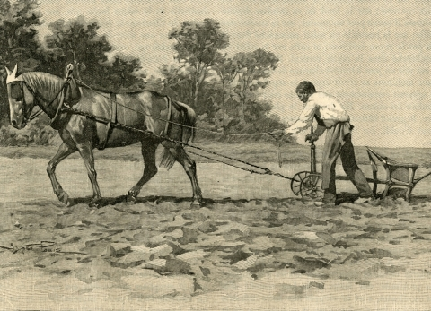

Le cheval a eu plusieurs rôles depuis que l'être humain l'a découvert et a compris que celui-ci était utile pour différentes tâches. Nous verrons alors ses différents rôles et son évolution dans l'histoire de l'humanité et dans la mondialisation.
Les chevaux sont nés en Amérique, mais ont été
chassés jusqu'à l'extinction presque totale... Les quelques chevaux
restants ont trouvé un moyen de s'en aller en empruntant le détroit
de Béring passant d'un continent à l'autre, de l'Amérique à l'Asie.
En Asie les chevaux ont été apprivoisés puis
utilisés pour les guerres, l'agriculture, le transport et les découvertes, devenant des outils incontournables.
Ils sont ensuite revenus en Amérique dans des navires européens (exportation de produits européens) et les indigènes les ont alors adoptés et sont alors devenus des cavaliers reconnus, devenant des bons guerriers et pouvant
étendre leurs territoires. L'adoption des chevaux influence alors profondémment leurs manières de vivre et leurs cultures. Depuis, le cheval est resté dans la culture de l'Homme et a eu différents rôles plus ou moins importants pour la mondialisation.
Sur le point de vue agricole, le cheval a longtemps été indispensable. Dans certaines régions il a remplacé le mulet et le boeuf pour les travaux des champs. Il a aussi eu un rôle dans le transport de ces produits dans le pays, dans le continent ou même dans le monde, créant de plus en plus de liens et devenant alors un facteur important de la mondialisation.  D ' un point de vue culturel, le cheval a aussi eu un impact sur la mondialisation. En effet, celui-ci est un moyen d'échange plus rapide pour les informations, les messages et les cultures en général. Avant le cheval, tout se faisait à pas d'humain ou de dromadaire, les échanges de biens, de produits et d'informations étaient beaucoup plus longs... De plus l'équithérapie fait son arrivée au XXIème siècle offrant au cheval un nouveau rôle d'outil médical pour l'homme. Le cheval a alors permis de faire accelérer le processus de mondialisation.
Comme précédemment dit, le cheval permet d'aller plus loin et plus rapidement, mais sans
celui-ci, ce processus doit se faire au pas de l'Homme, alors plus
lent et fatiguant...
Tout d'abord, en Amérique, les indigènes n'avaient à la base pas
de chevaux, ce qui explique la petite taille de leurs territoires.
Principal vecteur de conquête, le cheval est un
véhicule puissant, endurant et rapide devenant ainsi incontournable
pour la fondation d'un empire, autant pour le combat que pour étendre son territoire.
Nous avons vu que le cheval est un outil important pour le transport de produits agricoles, pour les échanges d'informations et il l'est également pour la guerre de par l'apport de munitions, d'armes et de soldats. Les ambulances militaires hippomobiles sont également à prendre en compte.
De plus, être à cheval permet de dominer son ennemi de par la prise de hauteur ce qui rend moins accessibles les cavaliers, atout important durant les combats. Posseder un cheval permet donc de se fatiguer moins vite, d'affirmer sa puissance, d'agrandir son territoire et d'être plus fort face à l'ennemi.
Pour conclure, le cheval a été un outil qui a permis une grande avancée pour la mondialisation, de par son histoire naissante particulière, de par son rôle agricole et culturel, son rôle dans la guerre et les territoires et son rôle de moyen de transport dans tous ces domaines. Il a toujours été notre moteur et aujourd'hui encore la puissance du moteur des véhicules se compte en chevaux ce qui prouve l'importance du cheval dans l'histoire de l'humanité.
created with
Website Builder Software .